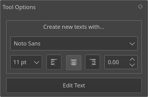
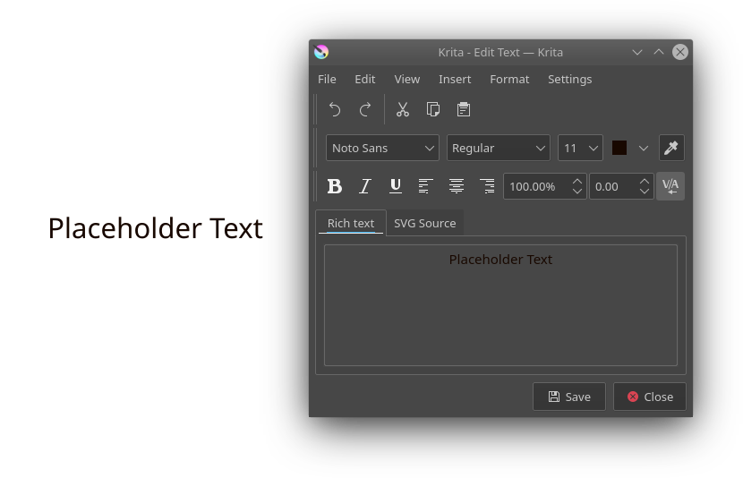

Text Tool¶

This tool allows you to add text to your artwork.
You use it by doing  + drag to create a rectangular selection. When releasing a default text will be created and the text editor window will pop-up.
+ drag to create a rectangular selection. When releasing a default text will be created and the text editor window will pop-up.
Hovering over other text shapes will highlight their bounding box. on a highlighted text will select it as the active text.
Tool Options¶
- Create new texts with...
This contains features with which to create new texts, the following items are available:
- Font
The letter type used by newly created texts.
- Size in pt
The letter-size used by newly created texts. It is in pts (points), which is a common standard for fonts that is measured 72 points per inch. It therefore will stay proportionally the same size if you increase or decrease canvas dpi.
- Anchor/Align text to the left/middle/right
Text alignment. This allows you to align text to the left, center it, or to the right. This is called text-anchor because SVG 1.1's multiline text only uses text-anchor, and this is a slight bit different than text-align (and also the reason justify isn't available at the moment).
- Letter Spacing
The letter spacing used by newly created texts.
- Edit Text
This will summon the text editor for the currently selected shape. This can be quickly invoked with either pressing the Enter key or double-click +
shortcut on the shape.
Text Editor¶
A small window for all your text editing needs. The Text Editor has two tabs: Rich text and SVG source.
- Activating
You can use the Text tool to first create a text box. There are a few options in the tool options if you want to customize how the text will be adding. You will need to drag a rectangle on the canvas to create the text area. Once your text is created, you can edit the text from two ways:
Select the text with the shape selection tool (first tool). Press the Enter key. The text editor will appear.
Select the text with the shape selection tool (first tool). Then click the Text tool. In the tool options there is an Edit Text button. When you click that the text editor window will appear.
- Editing
If you are unfamiliar with the way SVG text works, use the rich text tab, it will allow you to edit the text as you see it, at the cost of not having all functionality.
If you are a little bit more familiar with SVG text, you can directly edit the SVG source. Do note that not all attributes and properties are converted back to the rich text editor, so do be careful when switching back.
Press Save as you're done with your edits to preview them on canvas.
- File
- Save Ctrl + S
Save current edits to the text on canvas.
- Close Ctrl + W
Close the editor.
- Edit
Basic editing functions:
- Undo Ctrl + Z
Undo the last action in the text editor.
- Redo Ctrl + Shift + Z
Redo the last undone action in the text editor.
- Cut Ctrl + X
Cut selected text to the clipboard.
- Copy Ctrl + C
Copy selected text to the clipboard.
- Paste Ctrl + V
Paste text from the clipboard.
- Select all Ctrl + A
Select all text in the active editor.
- Deselect Ctrl + Shift + A
Deselect any selected text.
- Find Ctrl + F
Pops up a window with an input to find the given text in the active editor.
- Find Next F3
Searches for the next text using the last search key.
- Find Previous Shift + F3
Searches for the last text using the last search key.
- Replace... Ctrl + R
Pops up a dialog with two inputs: The string you wish to find, and the string you wish to replace it with. Will always replace ALL found instances.
- View
- Zoom Out Ctrl + -
Zoom out the text.
- Zoom In Ctrl + +
Zoom in the text.
- Insert
- Special Character... Alt + Shift + C
Pops up a dialog that allows you to search for special characters that are difficult to type in with your keyboard.
- Format
- Bold Ctrl + B
Set the font-weight to bold.
- Italic Ctrl + I
Sets the selected text italic.
- Underline Ctrl + U
Underline the selected text.
- Strike-Through
Adds a strike-through text decoration.
- Superscript Ctrl + Shift + P
Sets the text to super-script baseline.
- Subscript Ctrl + Shift + B
Sets the text to subscript baseline.
- Weight
Sets the font weight a little more specifically. Possibilities are... Light, Normal, Bold, and Black.
- Align Left
Align the selected paragraph to the left.
- Align Center Ctrl + Alt + C
Center the selected paragraph.
- Align Right Ctrl + Alt + R
Align the selected paragraph to the right.
- Kerning
Toggles kerning for selected text.
- Settings
- Settings...
Calls up the text-editor settings dialog.
Text Editor Settings¶
The settings that can be configured for the text editor.
- Editor Mode
Whether you want both the Rich Text Editor and the SVG Source Editor, or only one of either.
- Colors
Here you can configure the syntax highlighting for the SVG source.
- Keyword
These highlights important characters like <, /, and >.
- Element
The format for highlighting the element tag name. text and tspan are examples of element names.
- Attribute
The format for highlighting the attributes of the tag. For example,
font-family, when it isn't in thestyletag is usually written as an attribute.- Value
The format for highlighting value of attributes.
- Comment
This highlights XML comments, which are written as following:
<!-- This is an XML comment -->. Comments are pieces of text that never get interpreted.- Editor Text Color
The main color of the editor.
- Editor background color
The main background color of the editor.
- Fonts
This allows you to filter the selection of fonts in the editor by writing system. Some systems have a lot of fonts specifically for showing foreign languages properly, but these might not be useful for you. You just tick the writing systems which you use yourself, and the font drop-down will only show fonts that have full support for that language.
Fine typographic control with the SVG Source tab¶
So, the rich text editor cannot control all functionality that SVG text allows for. For that, you will need to touch the SVG source directly. But to do that, you will first need to go to the text editor settings and enable either SVG Source or Both editor mode. The Rich Text editor will lose some information, so if you go all out, use SVG Source.
Word-spacing, Letter-spacing and Kerning¶
These three are written and read from the rich text tab, but only two of them can be controlled from Rich Text tab.
- Kerning
Kerning, in SVG 1.1 behaves slightly differently than
font-kerningin CSS. Krita by default uses theautoproperty for this, which means it is on. To turn it off usekerning: 0;in thestylesection of the text. Any other numeric value will be added to currentletter-spacing.
<text style="kerning:0; font-family:Dancing Script; font-size:18pt; font-size-adjust:0.265625"> <tspan>No Kerning on Valhalla Tower.</tspan> </text>
- Letter-spacing
This is the distance between letters in pts, usually. Just write
letter-spacingin thestyleand add a distance in pts behind it. A negative value will decrease the value between letters.- Word-spacing
This is the extra distance between words, defaulting to pts. By default,
word-spacing: 0;will have it use only the width of the space character for that font. A negative value will decrease the amount of space between words:
<text style="font-family:Noto Serif; font-size:12pt; font-size-adjust:0.389915; text-anchor:middle"> <tspan>No Adjustment.</tspan> <tspan style="letter-spacing:2" x="0" dy="22pt">Letter spacing: 2</tspan> <tspan style="letter-spacing:-2" x="0" dy="22pt">Letter spacing: -2</tspan> <tspan style="word-spacing:5" x="0" dy="22pt">Word spacing: 5</tspan> <tspan style="word-spacing:-5" x="0" dy="22pt">Word spacing: -5</tspan> </text>
x, y, dx, dy¶
These are even finer-grained controls that can be used to position text. However, they CANNOT be reliably converted to the format of the rich text editor, because the rich text editor uses these to figure out if a line is a new-line and thus writes to these.
- X and Y
X and Y are absolute coordinates. But because you cannot change the absolute coordinates of the text from the editor, these get added to the position when they show up in a tspan.
- dx and dy
These are relative coordinates to the position of the previous letter.
Font-stretch and Small-caps¶
These can also be stored and written to the rich text tab's internal format, but they don't get used in the on screen text object.
Dominant Baseline, Alignment baseline, Font-size-adjust, Writing mode, Glyph-orientation, rotate¶
These are not stored in the rich text right now, and while they can be written into the SVG text, the SVG text-shape doesn't do anything with them.
Krita generates font-size-adjust for the font when coming from rich text, as this can help designers when they want to use the SVG source as a basis for later adjustments.